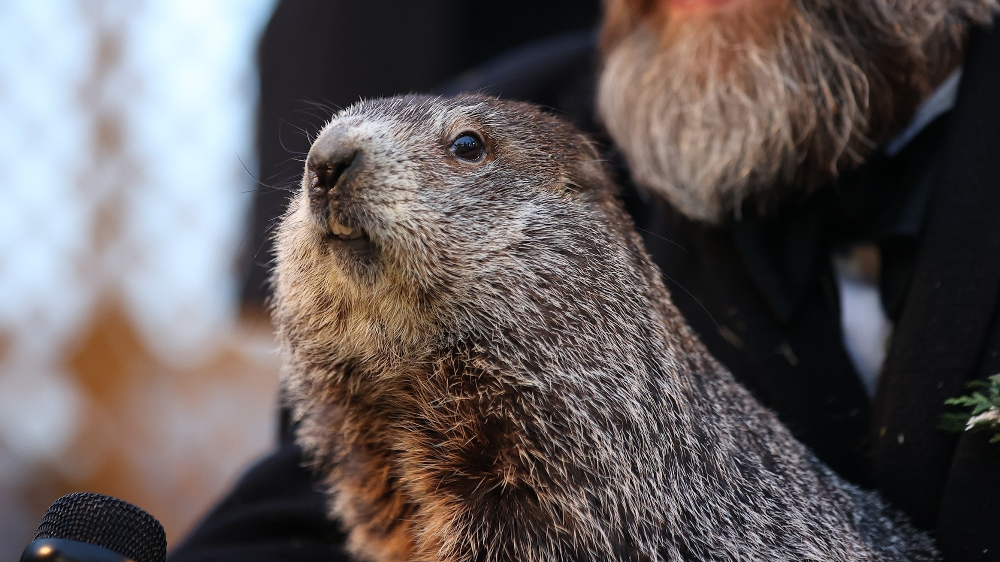

Who is Punxsutawney Phil?
Punxsutawney Phil is a groundhog who has had a prolific background in the media landscape. Appearing over one hundred years ago in 1887, Groundhog Day is used as a celebration of Phil and his predictive powers.
What is being Predicted?
Phil is predicting the liklihood of a early spring or 6 additional weeks of winter. Despite what his entourage would have you believe, this record is tainted by years of super stardom that the fanbase has been blissfully ignoring the telltale signs of for years. Phil has either lost his predictive power or never had them to begin with.